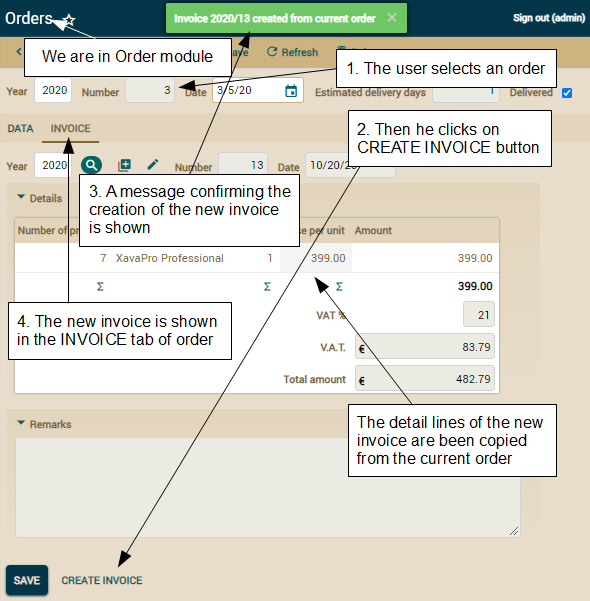
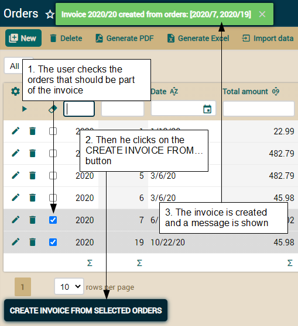
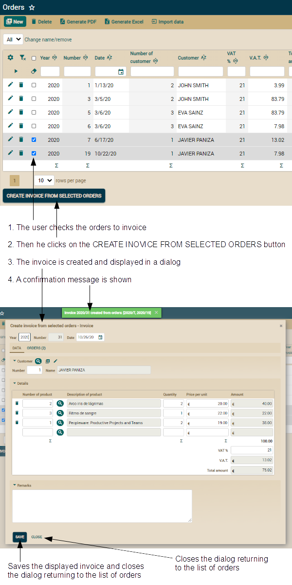
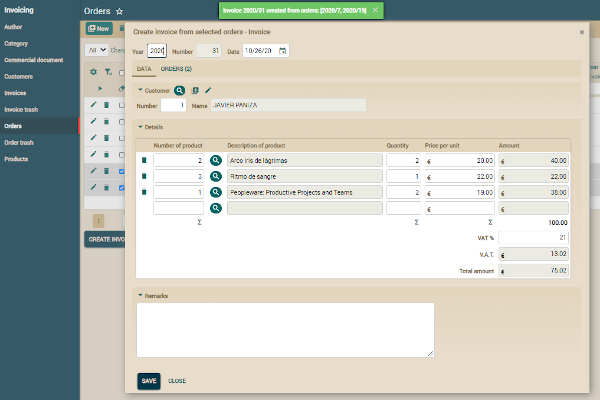
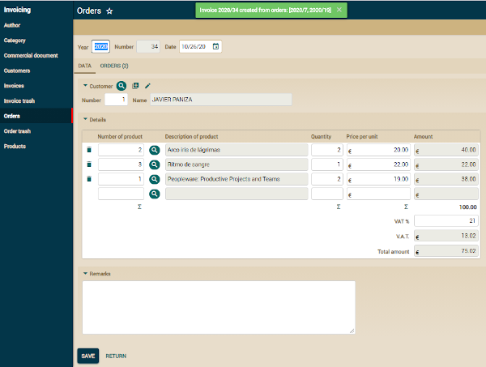

<controller name="Order">
<extends controller="Invoicing"/> <!-- Para tener las acciones estándar -->
<action name="createInvoice" mode="detail"
class="com.yourcompany.invoicing.actions.CreateInvoiceFromOrderAction"/>
<!-- mode="detail" : Sólo en modo detalle -->
</controller>
package com.yourcompany.invoicing.actions; // En el paquete 'actions'
import org.openxava.actions.*;
import com.yourcompany.invoicing.model.*;
public class CreateInvoiceFromOrderAction
extends ViewBaseAction { // Para usar getView()
public void execute() throws Exception {
Order order = (Order) getView().getEntity(); // Entidad Order visualizada en la vista (1)
order.createInvoice(); // El trabajo de verdad lo delegamos en la entidad (2)
getView().refresh(); // Para ver la factura creada en la pestaña INVOICE (3)
addMessage("invoice_created_from_order", // Mensaje de confirmación (4)
order.getInvoice());
}
}
invoice_created_from_order=Factura {0} creada a partir del pedido actual
abstract public class CommercialDocument extends Deletable {
...
public String toString() {
return year + "/" + number;
}
}
public class Order extends CommercialDocument {
...
public void createInvoice() throws Exception { // throws Exception para tener
// un código más simple, de momento
Invoice invoice = new Invoice(); // Instancia una Invoice (1)
BeanUtils.copyProperties(invoice, this); // y copia el estado
// del Order actual (2)
invoice.setOid(null); // Para que JPA sepa que esta entidad todavía no existe
invoice.setDate(LocalDate.now()); // La fecha para la nueva factura es hoy
invoice.setDetails(new ArrayList<>(getDetails())); // Clona la colección details
XPersistence.getManager().persist(invoice);
this.invoice = invoice; // Siempre después de persist() (3)
}
}
BeanUtils.copyProperties(invoice, this);
// Es lo mismo que
invoice.setOid(getOid());
invoice.setYear(getYear());
invoice.setNumber(getNumber());
invoice.setDate(getDate());
invoice.setDeleted(isDeleted());
invoice.setCustomer(getCustomer());
invoice.setVatPercentage(getVatPercentage());
invoice.setVat(getVat());
invoice.setTotalAmount(getTotalAmount());
invoice.setRemarks(getRemarks());
invoice.setDetails(getDetails());
package com.yourcompany.invoicing.model; // En el paquete 'model'
import org.openxava.util.*;
public class CreateInvoiceException extends Exception { // No RuntimeException
public CreateInvoiceException(String message) {
// El XavaResources es para traducir el mensaje desde el id en i18n
super(XavaResources.getString(message));
}
}
public void createInvoice()
throws CreateInvoiceException // Una excepción de aplicación (1)
{
if (this.invoice != null) { // Si ya tiene una factura no podemos crearla
throw new CreateInvoiceException(
"order_already_has_invoice"); // Admite un id de i18n como argumento
}
if (!isDelivered()) { // Si el pedido no está entregado no podemos crear la factura
throw new CreateInvoiceException("order_is_not_delivered");
}
try {
Invoice invoice = new Invoice();
BeanUtils.copyProperties(invoice, this);
invoice.setOid(null);
invoice.setDate(LocalDate.now());
invoice.setDetails(new ArrayList<>(getDetails()));
XPersistence.getManager().persist(invoice);
this.invoice = invoice;
}
catch (Exception ex) { // Cualquier excepción inesperada (2)
throw new SystemException( // Se lanza una excepción runtime (3)
"impossible_create_invoice", ex);
}
}
order_already_has_invoice=El pedido ya tiene una factura
order_is_not_delivered=El pedido todavía no está entregado
impossible_create_invoice=Imposible crear factura
public void execute() throws Exception {
// Añade la siguiente condición
if (getView().getValue("oid") == null) {
// Si el oid es nulo el pedido actual no se ha grabado todavía (1)
addError("impossible_create_invoice_order_not_exist");
return;
}
...
}
impossible_create_invoice_order_not_exist=Imposible crear factura: El pedido no existe todavía
package com.yourcompany.invoicing.actions; // En el paquete 'actions'
import org.openxava.actions.*; // Necesario para usar OnChangePropertyAction,
public class ShowHideCreateInvoiceAction
extends OnChangePropertyBaseAction { // Necesario para las acciones @OnChange (1)
public void execute() throws Exception {
if (isOrderCreated() && isDelivered() && !hasInvoice()) { // (2)
addActions("Order.createInvoice");
}
else {
removeActions("Order.createInvoice");
}
}
private boolean isOrderCreated() {
return getView().getValue("oid") != null; // Leemos el valor de la vista
}
private boolean isDelivered() {
Boolean delivered = (Boolean)
getView().getValue("delivered"); // Leemos el valor de la vista
return delivered == null?false:delivered;
}
private boolean hasInvoice() {
return getView().getValue("invoice.oid") != null; // Leemos el valor de la vista
}
}
public class Order extends CommercialDocument {
...
@OnChange(ShowHideCreateInvoiceAction.class) // Añade esto
Invoice invoice;
...
@OnChange(ShowHideCreateInvoiceAction.class) // Añade esto
boolean delivered;
...
}
public class SearchExcludingDeletedAction
// extends SearchByViewKeyAction {
extends SearchExecutingOnChangeAction { // Usa ésta como clase base
public void execute() throws Exception {
...
// Todo ha ido bien, por tanto ocultamos la acción
removeActions("Order.createInvoice");
}

<controller name="Order">
...
<!-- La nueva acción -->
<action name="createInvoiceFromSelectedOrders"
mode="list"
class="com.yourcompany.invoicing.actions.CreateInvoiceFromSelectedOrdersAction"/>
<!-- mode="list": Sólo se muestra en modo lista -->
</controller>
package com.yourcompany.invoicing.actions;
import java.util.*;
import org.openxava.actions.*;
import org.openxava.model.*;
import com.yourcompany.invoicing.model.*;
public class CreateInvoiceFromSelectedOrdersAction
extends TabBaseAction { // Típico de acciones de lista. Permite usar getTab() (1)
public void execute() throws Exception {
Collection<Order> orders = getSelectedOrders(); // (2)
Invoice invoice = Invoice.createFromOrders(orders); // (3)
addMessage("invoice_created_from_orders", invoice, orders); // (4)
}
private Collection<Order> getSelectedOrders() // (5)
throws FinderException
{
Collection<Order> result = new ArrayList<>();
for (Map key: getTab().getSelectedKeys()) { // (6)
Order order = (Order) MapFacade.findEntity("Order", key); // (7)
result.add(order);
}
return result;
}
}
invoice_created_from_orders=Factura {0} creada a partir de los pedidos: {1}
public class Invoice extends CommercialDocument {
...
public static Invoice createFromOrders(Collection<Order> orders)
throws CreateInvoiceException
{
Invoice invoice = null;
for (Order order: orders) {
if (invoice == null) { // El primer pedido
order.createInvoice(); // Reutilizamos la lógica para crear una
// factura desde un pedido
invoice = order.getInvoice(); // y usamos la factura creada
}
else { // Para el resto de los pedidos la factura ya está creada
order.setInvoice(invoice); // Asigna la factura
order.copyDetailsToInvoice(); // Un método de Order para copiar las líneas
}
}
if (invoice == null) { // Si no hay pedidos
throw new CreateInvoiceException(
"orders_not_specified");
}
return invoice;
}
}
public class Order extends CommercialDocument {
...
public void copyDetailsToInvoice() {
invoice.getDetails().addAll(getDetails()); // Copia las líneas
invoice.setVat(invoice.getVat().add(getVat())); // Acumula el vat
invoice.setTotalAmount( // y el importe total
invoice.getTotalAmount().add(getTotalAmount()));
}
}
orders_not_specified=Pedidos no especificados

public void execute() throws Exception {
Collection<Order> orders = getSelectedOrders();
Invoice invoice = Invoice.createFromOrders(orders);
addMessage("invoice_created_from_orders", invoice, orders);
// Añade las siguientes líneas para mostrar el diálogo
showDialog(); // (1)
// A partir de ahora getView() es el diálogo
getView().setModel(invoice); // Visualiza la factura en el diálogo (2)
getView().setKeyEditable(false); // Para indicar que el objeto ya existe (3)
setControllers("InvoiceEdition"); // Las acciones del diálogo (4)
}
<controller name="InvoiceEdition">
<action name="save"
class="com.yourcompany.invoicing.actions.SaveInvoiceAction"
keystroke="Control S"/>
<action name="close"
class="org.openxava.actions.CancelAction"/>
</controller>
package com.yourcompany.invoicing.actions;
import org.openxava.actions.*;
public class SaveInvoiceAction
extends SaveAction { // Acción estándar de OpenXava para
// grabar el contenido de la vista
public void execute() throws Exception {
super.execute(); // La lógica estándar de grabación (1)
closeDialog(); // (2)
}
}


showDialog();
showNewView();